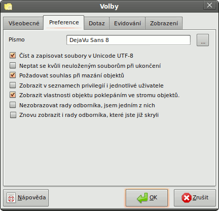

Volby pgAdmin - Karta 2 (Preference)

- Písmo - Můžete si vybrat font, který se bude standardně používat v celém pgAdminu. To se může hodit pro
vícebajtové znakové sady, které standardní systémový font nepokryje nebo prostě když chcete použít jiné písmo, než
máte nastavené v systému.
- Číst a zapisovat soubory v Unicode UTF-8 - Tato volba zajistí, že jako výchozí kódování při zápisu souborů se
bude používat Unicode UTF-8.
- Neptat se kvůli neuloženým souborům při ukončení - Toto volbou zabráníte, aby se vás pgAdmin při ukončení ptal,
jestli chcete uložit dotazy SQL.
- Požadovat souhlas při mazání objektů - Touto volba způsobí, že před smazáním objektu vám dá pgAdmin ještě šanci
si to rozmyslet zobrazením dotazu (doporučeno).
- Zobrazit v seznamech privilegií i jednotlivé uživatele - Pokud je tato volba zapnutá, zahrnou se na kartě
„Oprávnění“ ve vlastnostech objektu do seznamu rolí i jednotliví uživatelé. V rozsáhlých systémech s velkým množstvím
uživatelů rozdělených do správných skupin je vhodnější nechat volbu vypnutou.
- Zobrazit vlastnosti objektu poklikáním ve stromu objektů - Tato volba umožní dvojitým kliknutím ve stromu objektů
zobrazit dialog s vlastnostmi objektu, na který jste klikli. Někteří preferují, aby se poklikáním rozevřela větev stromu,
čehož se dosáhne vypnutím této volby.
- Nezobrazovat rady odborníka, jsem jedním z nich - pgAdmin III vám občas, když usoudí, že můžete potřebovat pomoc,
zobrazí okno s radou. Pokud vás to obtěžuje a chcete to zakázat, zaškrtněte tuto volbu
- Znovu zobrazit i rady odborníka, které jste již zakázali - Když se vám zobrazí rada odborníka, máte možnost nastavit, že
už si ji příště nepřejete vidět. Pokud chcete, aby se takovéto rady začaly opět zobrazovat, zaškrtněte tuto volbu.